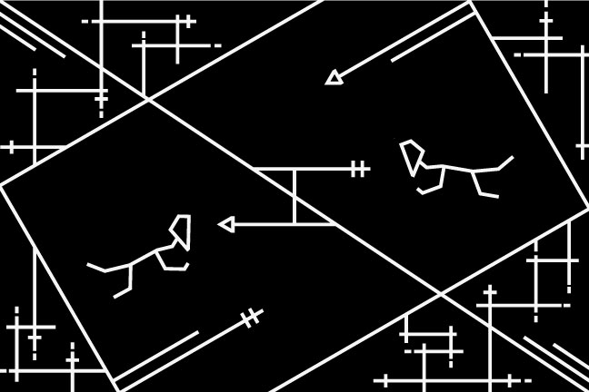

Project 1 - Visual Message to Celestial Beings
For this project,the main topic is communication with the celestial cretures. So I started to think, what about hsving a message that represent our intent of communication? Extended on the idea, network, emotion and exchange come out in my mind.
Crossing line with continuous end represents the network the help deliver messages and information. Two little match man with half heart shape head that have the intention to touch the other half. Also, the small symbols on the straight lines mimic the way of communication that exchanging information.